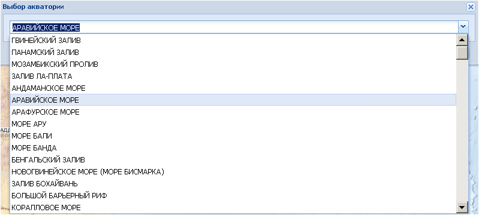

ѕоиск
»нструмент ѕоиск по акватории служит дл€ поиска на карте необходимой акватории и быстрого перехода к ней. ѕри выборе данной команды по€вл€етс€ поисковое окно ¬ыбор акватории, в котором предлагаетс€ из ниспадающего списка выбрать требуемую акваторию.

ѕосла нажати€ кнопки ѕерейти видима€ область карты переместитс€ в заданное место.